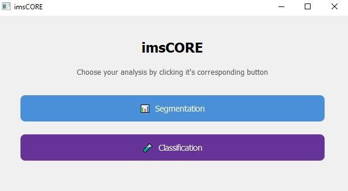

Portfolio Nils Charfeddine Barbier
Etudes
BTS SIO : option SLAM ( Solutions Logicielles etapplications métiers )
Après ma première année de licence maths info j’ai décidé de me réorienter vers un BTS SIO option SLAM (Solutions Logicielles et Applications métiers) au Lycée Gaston berger Lille à partir de 2025.
L1 Maths Info
Après l’obtention de mon Baccalauréat général j’ai suivi la 1ère année de la licence Maths Info Université de Lille en 2024/2025.
Baccalauréat général – Mention européenne (anglais)
J’ai obtenu mon Baccalauréat général avec la Mention européenne (anglais) au Lycée Yves Kernanec au cours de l’année scolaire 2023/2024.
Stage
imsCORE

imsCORE est un projet développé lors de mon stage de première année de BTS SIO. Ce projet est une interface graphique pour le pipeline qui m'a été fourni et que j'ai développé . l'interface graphique a été conçue avec le package Python PyQt5, puis convertie en fichier exécutable à l'aide de PyInstaller. Elle permet d'analyser des données issues de fichiers de spectrométrie de masse imzML.